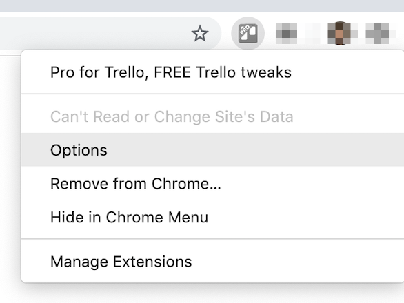
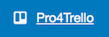
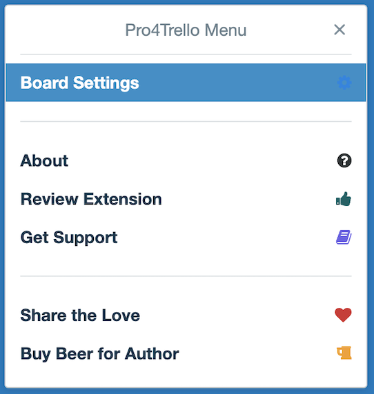
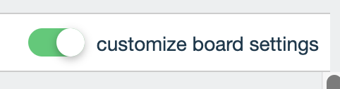

Pro for Trello added to Chrome
Congrats! Your Trello experience will never be the same!
HOW TO USE
FOR ALL BOARDS
1. Right click on the Pro4Trello icon in the top right corner.
2. Select "Options" (you can also click here):

3. Configure tweaks that will be applied across all boards.

4. Refresh page of your boards if they are currently opened.
FOR INDIVIDUAL BOARDS
1. Refresh page of your board if it is currently opened.
2. Look for the "Pro4Trello" option in the bottom right corner:

3. Select "Board Settings"

4. Opt-in to "customize board settings"

5. Configure tweaks that will be applied for that board only.